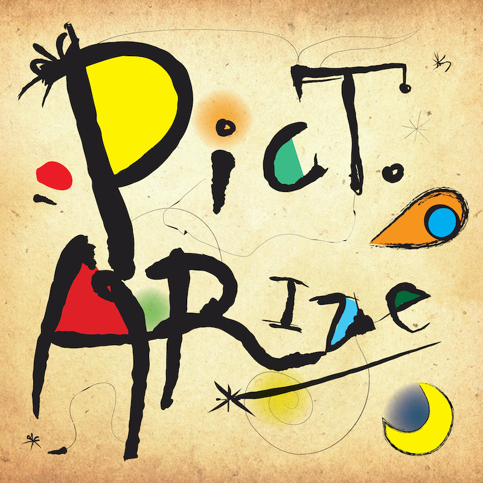
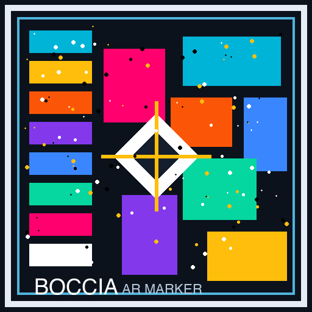

Experiences
Each experience uses a different printed marker image.
Boccia marker = boccia.png · Logo marker = shwaa-logo.png (same watch GLB).
Seiko still uses the original watch marker.
Card marker — cube drag

Gallery marker — swipe photos

Watch marker — print/show THIS image, then Seiko GLB appears (drag to rotate)

Boccia marker — print boccia.png

SHWAA logo marker — print/show THIS for Boccia watch on the logo